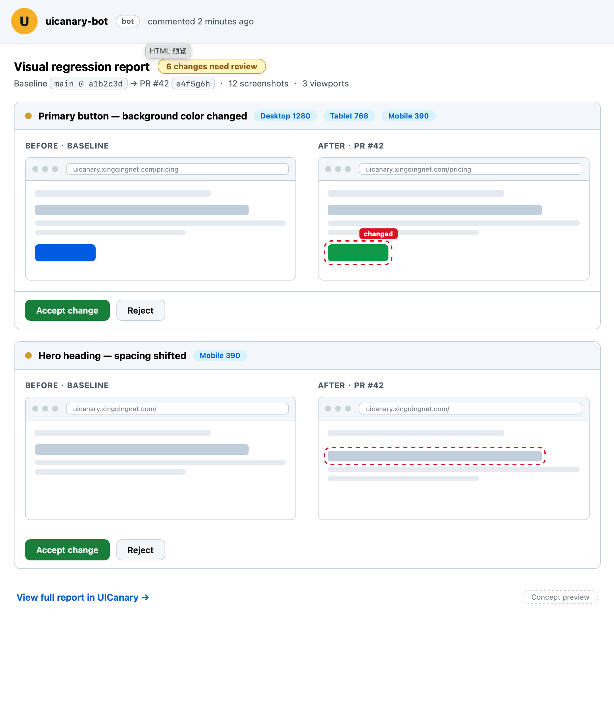

Your agent reordered a sidebar — and quietly broke the checkout page on mobile. Agent screenshot checks verify one change, then forget it. UICanary is the memory layer underneath: baselines across every branch, diffs grouped by PR, desktop + mobile in one run. And no screenshot quotas: Percy's 5,000 free screenshots are gone by week two at 10 PRs a day × 5 pages × 3 viewports.
$1 is a fully refundable deposit · No credit card for the free tier · Cancel anytime

Concept mock of the planned diff review UI. UICanary is currently in presale and under development — the interface above illustrates the vision, not a shipped product.
AI writes UI 10× faster — and ships visual bugs 10× faster too.
Your agent can verify what it just built — but what about the next PR? The next branch? The staging deploy at 2am? Screenshots evaporate; regressions creep back in. A one-off check is not a system of record.
Percy's free tier is 5,000 screenshots a month. Ship 10 PRs a day across 5 pages × 3 viewports and you're done by week two. AI assistants made you iterate 10× faster — per-screenshot billing taxes exactly that.
Playwright screenshots plus a loose threshold catch big layout shifts — and drown you in font-rendering and animation false positives. No review UI, no PR comments, no baseline management across branches and OSes.
Agent skills answer "is this change OK?" — once. UICanary answers "did every release stay correct?" — always.
| UICanary | Percy | Agent skills (ProofShot / pursr) | Playwright DIY | |
|---|---|---|---|---|
| Answers | "Did every release stay correct?" | Same | "Is this change OK?" (one-off) | "Here's a PNG, you figure it out" |
| Baselines across branches | Yes | Yes | No | DIY |
| Multi-viewport in one run | Yes | Yes | Manual | DIY |
| Team review workflow | Yes | Yes | No | No |
| Noise management over time | Yes | Partial | No | DIY |
| Screenshot quotas | None — pay as you go | Yes | None | None |
| Starting price | $19/mo (early bird) | Free 5k/mo, then quote-based | Free | Free |
One line in your workflow. Baselines from the first run.
Paste the Action, add your API key as a secret. Done in 5 minutes.
Desktop, tablet, mobile — baselines stored per branch, history kept.
Diffs grouped by what actually changed: review 6 real changes instead of 60 screenshots. See when something broke, not just that it broke.
Example configuration — presale preview. The API is in development; this snippet is illustrative and subject to change.
# .github/workflows/visual.yml # Example configuration — presale preview, API in development and subject to change - name: Visual regression uses: uicanary/visual-regression@v1 with: api-key: ${{ secrets.UICANARY_API_KEY }} viewports: "1280x800, 390x844" threshold: 0.1
Everything a one-off screenshot check can't do.
Baselines stored per branch, with full run history — audit when anything broke, not just that it broke.
Built for AI-iteration workflows — diffs clustered by what actually changed, so you review 6 real changes instead of 60 screenshots.
Per-project tuning for fonts, animations, timestamps and dynamic content — false positives go down over time instead of piling up.
Desktop, tablet, mobile in one run.
Scale with your PR velocity, not against it.
Encrypted in transit and at rest; configurable retention; export or delete baselines anytime. Removing us is one line in your workflow file.
Start free. Lock in early-bird pricing for life before launch.
Free tier opens at launch — join the waitlist.
$1 is a fully refundable deposit. If we don't launch, you get it back — no questions asked.
Launches after the early-bird window closes.
Straight answers, no marketing fog.
$1 reserves $19/mo for life. Refundable if we don't launch.
Lock in $19/mo for life — $1 presaleOr join the waitlist for launch updates: